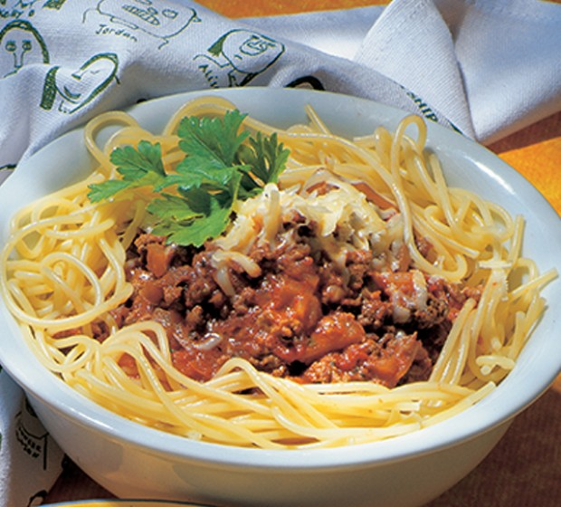

Lasagne

Desciption
A good base meat sauce for serving with pasta.
Ingredients
- 2 Tbsp oil
- 1 large onion, finely chopped
- 500g lean beef mince
- ¼ cup tomato paste
- 400g can crushed tomatoes, in juice
- 1 tsp basil
- 1 tsp oregano
- 3 cups water
- Salt
- Black pepper
- 250g spaghetti, cooked
- Parmesan cheese, grated
Method
- Heat oil in a large frying pan. Add onion and cook until golden, stirring constantly. Stir in meat and
quickly brown. Add tomato paste and canned tomatoes. Stir in basil, oregano and water.
- Bring to the boil, reduce heat and cook uncovered for 45 minutes or until mixture is a thick sauce
consistency. Season with salt and pepper to taste. Serve over hot pasta garnished with parmesan cheese.